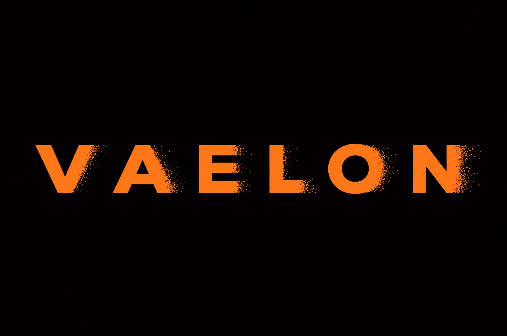

Talk, or type
Hands-free conversation you can interrupt, a small companion window that stays on top, and a Voice Designer for pitch, speed and effects. The local voices are free and private.

VAELONYour private AI, on your own computer. On your side.
Talk to it or type. Vaelon answers, writes real documents, keeps your calendar and money in order and remembers how you work, without sending your life to a cloud.
Free and open source · Windows 10/11 and macOS 14+ on Apple silicon · works offline with a local model
| Apartment rent | due 1 Dec | 650.00 EUR |
| Electricity | 2 days late | 52.40 EUR |
| Car insurance | due 27 Dec | 482.80 EUR |
What it does
Answers come with work behind them: the document written, the date in the calendar, the bill tracked. Anything that changes or sends something waits for your yes.
Hands-free conversation you can interrupt, a small companion window that stays on top, and a Voice Designer for pitch, speed and effects. The local voices are free and private.
Word, PDF, Excel and PowerPoint files that look made by a person, plus spoken audio. Attach a picture or a file and ask about it.
Bills with reminders, invoices with unbroken numbering, a monthly budget, a pipeline of deals and bank statement import. Vaelon keeps track; it never pays and never touches your bank.
I have an exam in four days
becomes a calendar entry and a study plan. Birthdays come back every year with a reminder the day before.
Weather, stocks, exchange rates, news and encyclopedia answers arrive instantly. For bigger questions, a deep research mode reads many sources and lists them.
Optional company mode: separate companies, people with roles and a PIN, a lock button and a journal of who changed what. Profiles for business, learning, coding or everyday life.
Privacy
Vaelon thinks with a local model. A cloud model is a choice you make yourself, with your own key, and the app tells you plainly when text leaves the computer.
Everything, unless you decide otherwise.
Each one happens only when you use it.
No account. No telemetry.Your data is stored encrypted with AES-256-GCM, with the key protected by your system's key store.
Safety
Before Vaelon deletes, sends or runs anything, it stops and shows you exactly what it wants to do. The model cannot press Allow for you.
PERMANENTLY DELETE Documents/report.pdf
Vaelon: this cannot be undone.
Waiting for you.
Getting started
Run the installer on Windows, or drag Vaelon from the disk image into Applications on a Mac. The first launch asks once, because the app is not paid-signed (Windows: More info, Run anyway; Mac: System Settings, Privacy & Security, Open Anyway). Your data stays in your user folder, separate from the app.
On your computer with the free Ollama app and a local model (about 2.5 GB; the setup has a button that opens its download page), or with a fast cloud model and your own key. You can switch any time.
Type or talk, attach a file, give it a task. The help page explains every part in plain words.
FAQ
Yes. Vaelon is free software under the GNU GPL v3 or later. No account, no subscription. If you pick a cloud model or voice, you use your own key with that provider.
Not by default. With a local model everything runs on your computer. Text leaves only when you choose it: a cloud model, a cloud voice, a web search or a message you ask Vaelon to send.
Yes, on Macs with Apple silicon (M1 or newer) and macOS 14 or newer. Intel Macs are not supported yet.
The app is not notarised by Apple (that needs a paid account), so the first time you open it macOS refuses: open System Settings, Privacy & Security, scroll down and click Open Anyway. After that it opens normally.
A model to think with. Either the free Ollama app with a local model (private, nothing leaves your computer; the first-run setup has a button that opens Ollama's download page), or a key from a cloud provider such as Groq or Google Gemini, which both have free plans.
Without a model Vaelon still answers simple things at once, like the time, the weather, prices, your calendar and your bills.
A normal laptop or desktop: Windows 10 or 11 (64-bit), or a Mac with Apple silicon. The app takes a few hundred MB at most (about 130 MB on Windows); a local model needs about 2.5 GB more, and 8 GB of memory is comfortable.
A local model is slower on a weak processor (Apple silicon runs it well); a free cloud key makes any computer fast.
No. It keeps track of bills, invoices and your budget and reminds you. Paying stays with you and your bank.
Yes, under GPL-3.0-or-later. The whole source is on GitHub: github.com/Nokk1251/vaelon.
Download
Version 0.19.0. Both versions are free.
First launch: Windows may say "Windows protected your PC" (More info, Run anyway); a Mac asks once in System Settings, Privacy & Security (Open Anyway). Checksums, the portable Windows version and every release: the release page.